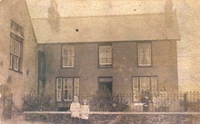

The School
Hugh Griffiths, the headteacher in the 1920s, in front of the schoolhouse
In a public meeting held in Llithfaen chapel on 30 April 1867, it was passed that a daily school was to be established to serve the community. A century later, a notice of closure was given in May 1966. At the time of its closure, there were 20 registered pupils at the school. In 1920/21, the school’s hayday, it had 190 registered pupils and employed 4 teachers – Hugh Griffiths, the headmaster, A.M. Roberts, Gwen Jones and J.E. Edwards as teaching staff.
Census Facts:

The older children of Llithfaen school, circa 1885 (Photographer: John Thomas) National Library of Wales)